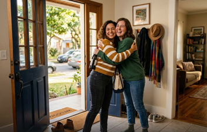
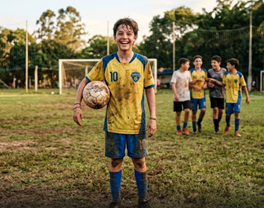
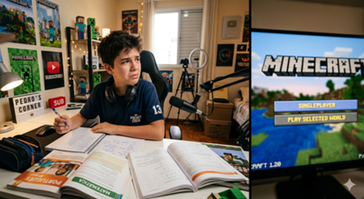

Estudante: Turma do 7º Ano
Série: 7º ANO
Professor: Johnatan Willow
Instrução: Selecione o texto para traduzir no VLibras. Marque a resposta certa em cada questão e clique em "Finalizar Prova" no final.


